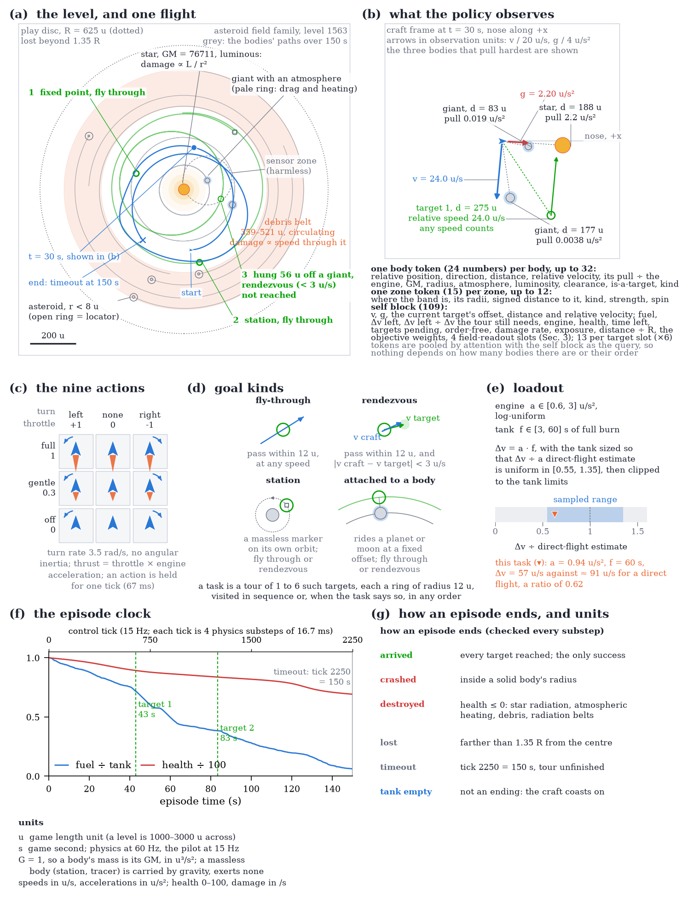
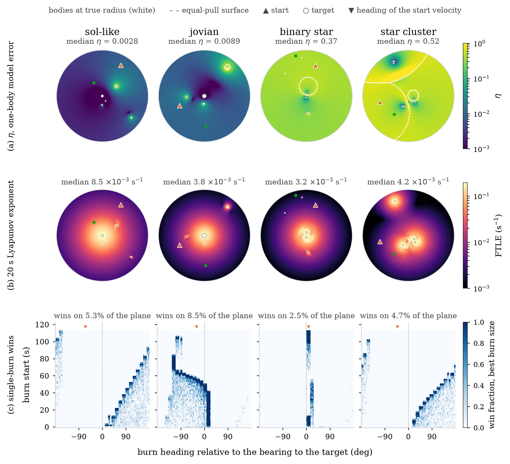
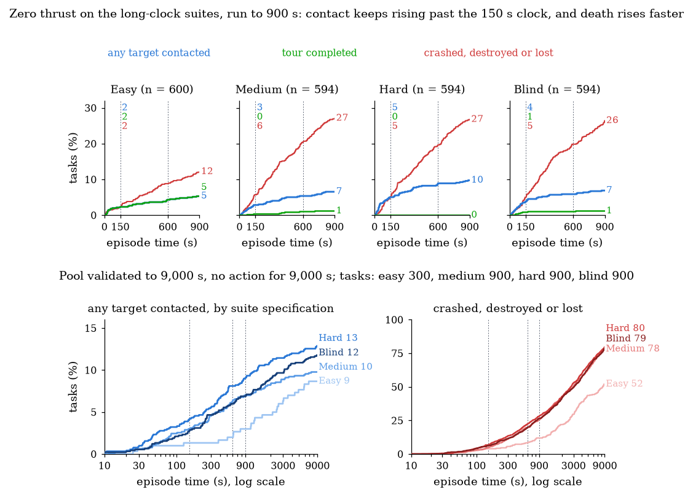
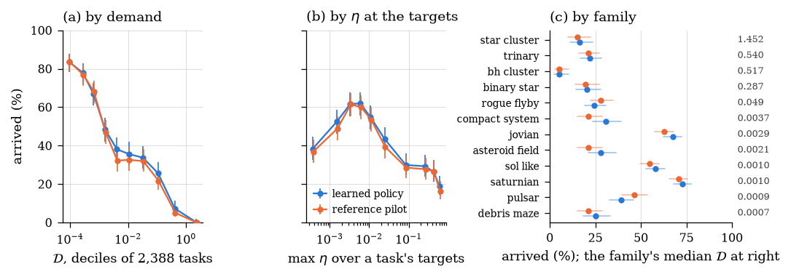

spacenav · sheet 1 of 2 · companion to the paper
N-Body Navigation
A craft with a steerable engine and a finite tank must reach a short sequence of moving targets inside a field generated by up to 32 bodies. The task is fully specified and cheap to simulate, and it is still hard to say what it means for one of its levels to be hard, how that can be checked, and what a learning agent can be expected to do about it.
The task
The task is two-dimensional and game-scale. A craft with a steerable engine and a finite tank must fly through, or match velocity with, a short sequence of targets inside a field generated by up to 32 bodies, several of which may be moving targets themselves. Episodes last 150 simulated seconds at a 15 Hz control rate (2250 decisions per episode), and the craft's nine actions are the combinations a person could hold on a gamepad (three turn directions crossed with three throttle levels). The bodies attract one another and are advanced by a leapfrog integrator at a 1/60 s substep, while the craft is a test particle, accelerated by every body and accelerating none, so that a level's whole future is fixed by its initial snapshot, which is what allows a level to be reproduced from a seed, replayed exactly, and integrated independently by a browser from about 1.5 KB of state. The figure from the paper lays the task out in full; the drawn panels after it pick out the parts of it a learner touches.

asteroid_field family (validation level 1563, radius 625 u) with the bodies' paths over one 150 s episode and a three-target tour; the flight shown is one of 32 sampled rollouts of a trained policy, all of which reach the first two targets (at 43 s and 83 s) and then circle the star to the clock without matching the giant's velocity. (b) What the policy observes at t = 30 s, in the craft's frame. (c) The nine actions, turn × throttle. (d) The four goal kinds and their tolerances. (e) The loadout, with the Δv budget as a multiple of the direct-flight estimate. (f) Fuel and health of the flight in (a) against the 2250-tick clock. (g) The five ways an episode ends, the one way it does not, and the units.- Star
Dominant mass. Every body attracts every other; the field is integrated with a leapfrog scheme at 1/60 s.
- Planet and moon
Bodies move visibly during an episode. Inside a body's radius the pull falls off linearly, so nothing is singular.
- Attached target
A target riding on a body carries the body's motion; the dashed arc is where it will be.
- The craft
Blue is heading, with the thrust vector; the pale arrow is velocity, the gold one local gravity. The tank is sized so gravity can never be ignored.
- Free-space target
Arrival radius 12 u. A rendezvous target also demands a relative speed under 3 u/s.
- Radiation belt
A hazard band. Damage accrues inside; enough of it ends the episode.
- Level radius
Dotted. Past 1.35 times it the craft is lost and the episode ends.
- Second planet
With a thin atmosphere ring: drag and heating for a craft that passes too close.
The observation is the craft's own view, with every position and velocity taken relative to the craft and rotated so that its nose lies along +x. A fixed block of 109 numbers carries the craft's state, the tour and the loadout; each of up to 32 bodies is a token of 24 numbers and each of up to 12 hazard zones a token of 15, and the network pools the tokens two ways (cross-attention with the craft's block as the query, and a masked max), so that nothing depends on how many bodies there are or on their order and the same 285,322 weights run on every level.
The nine actions are the combinations a person could hold on a gamepad, three turn directions crossed with three throttle levels, with no angular inertia and with each action held for one control tick. Four physics substeps make one tick, so the craft and a human player both act at 15 Hz, and the 66.7 ms tick is already coarser than a trained hand.
An episode ends in exactly one of five ways, tested at the end of every physics substep: arrival at the last target, which is the only success; collision with a solid body; destruction by accumulated damage from stellar radiation, atmospheric heating, debris and radiation belts; departure past 1.35 times the level radius; or the clock, at tick 2250. An empty tank is not among them, since the throttle then does nothing and the craft coasts under gravity alone until one of the five occurs, which on an energy-efficient path is often the clock, and that is one of the reasons the clock matters as much as it does (section 04).
Three ways to picture the problem
The rest of the sheet returns repeatedly to three pictures of the task, which are each correct and each suggest a different notion of difficulty, and no one of which is sufficient alone.
A plain reinforcement-learning loop
The craft observes the field, acts, is rewarded for progress, and improves a policy by gradient steps on that reward. An agent trained this way does learn to fly (section 06), but when the craft enters a region in which nearby trajectories diverge exponentially the objective becomes rough at every scale below the divergence length, and the gradient carries no usable descent direction unless the algorithm's discount and control interval sit on the right side of a threshold set by the field's Lyapunov exponent. Whether this field crosses that threshold is measured in section 04.
A state machine with noise filters
The flight is passage through a sequence of regions of differing predictability. In a well-behaved regime a trajectory can be planned ahead with confidence, while inside a chaotic one the exit trajectory cannot be predicted, by definition, though it can be bounded, i.e. the region can be entered in a way that constrains the set of exits to something a plan on the far side can absorb. On this view a chaotic region is a noise filter and the navigator's plan is for what comes after it, which is the picture closest to how spacecraft trajectory designers reason about a close encounter, and the one that makes difficulty depend on what lies after a region as much as on the region itself.
Stackable strategies
- Dead heading. Point at the target and burn; adequate when gravity is negligible against the engine.
- Leading. Aim where a moving target will be.
- Conics. Only the nearest massive body is accounted for, and a flight is a sequence of Keplerian arcs.
- Assists and transfers. Encounters used deliberately for speed, and the field's own transport structure for low-energy routes.
- Learned models. Models learned from experience that make no such simplifying commitment.
Each rung is a representation of the field, adequate for a class of levels and subsumed by the next, and a level is hard on this picture when the rung a navigator stands on is the wrong one for it. Of the three pictures this is the one that yields a closed-form difficulty measure (section 04).
Why a level of a given difficulty is hard to design
A level generator that is asked for a hard level has to decide what hard means, and the three pictures make it clear that no single answer exists. A level can be hard for at least six reasons: 1) the field is contested and a coarse representation of it is wrong; 2) an encounter scatters trajectories so widely that nothing on the far side can be planned for; 3) the window in which a decisive action must be taken is narrower than a human hand can hold; 4) the tank is short; 5) the hazards are dense; or 6) the targets are placed so that one of these is unavoidable. A level that is hard for one of these reasons may be trivial for every other, and the repair for one does nothing for another, since widening a timing window does not change a contested field and simplifying the field does not widen a window.
None of these can be checked by exhaustion. The naive procedure, enumerating every control sequence and simulating each, has aT sequences for a actions over T steps, and at T = 2250 even the nine-action set gives 92250, a number with more than two thousand digits, while the underlying continuous problem has no finite enumeration at all; motion planning among moving obstacles is PSPACE-hard and reachability for quite simple continuous dynamics is undecidable. Exhaustive checking is replaced in practice by a simplifying assumption or by a search that samples the space, and both share a limitation that a chaotic regime makes acute, since where nearby trajectories diverge exponentially the computed trajectory of a control sequence and the true one part company within a few Lyapunov times, so that a check which reports a sequence arrives is a statement about a trajectory the craft cannot actually fly. Ensemble statistics over many orbits remain reliable where individual orbits do not, which is why a level's difficulty is measured here over a population, and the measurement is only as good as the probe used to make it.
The quantities used
The quantities used to describe a level are heuristics, in the sense that each is a cheap proxy for a property that cannot be computed exactly. The representation a person brings to a gravitational field is almost always the one-body one, in which the dominant attractor is identified and its field is taken for the whole field, and the first three quantities ask how wrong that is and how much the error would cost; the fourth asks whether a human hand could execute the answer; the two after it ask whether the field is chaotic on the episode's timescale rather than assumed to be; the last asks whether anyone can fly the level at all.
| Symbol | What it measures | Picture it serves | Form |
|---|---|---|---|
| η | The fraction of the local gravitational acceleration that a one-body model discards, |afull − adom| / |afull|, near zero where patched conics is adequate and near one where it is not. It peaks on the surface where a secondary's pull equals its primary's, at a√(m/M) from the secondary, about half a Hill radius. | c · is the conic rung enough? | closed form |
| A | Authority: the tank as a velocity budget divided by the impulse gravity will deliver over the remaining flight, Δvtank / (|g| T). Above 1 the craft can out-push the field; below 1 it cannot. | c · can thrust overrule the field? | closed form |
| D = η/A | The share of the tank that flying the wrong representation would cost. It needs no simulation, and it inverts, so a level can be placed at a chosen D by solving for the tank. | c · representational difficulty | closed form |
| window | The width of the window in which a decisive action must be taken, against measured human limits (200–250 ms of simple reaction time, against a 66.7 ms tick). Banded separately from D and never combined with it; the trivial axis. | a · execution, not representation | banded per level |
| Tλ | Lyapunov time against the 150 s episode. Measured at about 140 s (λ = 0.0045–0.0086 s−1 once ballistic drift is divided out), one e-folding per episode, against the 67 s at which the learning objective would lose its usable gradient. The field is quasi-integrable on episode timescales, and chaos has to be built into a level. | a, b · is there a filter to pass? | measured |
| α | The uncertainty exponent of the arrival basin, near one for a smooth boundary and near zero for a fractal one. It measures 0.53–1.02 once 768 perturbation samples per level are used to fit it, consistent with the Lyapunov result. | a, b · what chaos does to the reward | measured |
| solvable | Whether a cross-entropy-method trajectory optimizer (48 control segments of 3.1 s, 96 samples, 7 iterations) or an enumerated one- or two-burn family arrives. A level that nothing can fly receives no difficulty label; the optimizer's failure is weak evidence, and the true optimum is never in hand. | all · the gate before any label | CEM optimizer |
An ordinary hierarchical level in this environment has η of order 0.003 over its
playable area and a median A near 2.3 over sampled task instances (n = 4,096), so
that D is of order 0.001: gravity supplies a substantial fraction of the tank's worth
of impulse over a flight, but a single body explains more than 99% of the field, so
that a one-body picture is adequate on an ordinary level and η has to be raised by
construction. That D measures what it is meant to was checked by
comparing a planner restricted to the one-body representation against one with
the true field, on levels pooled by D band (24 levels per band, two bands): below
D = 0.1 the two were indistinguishable (32% versus 42% arrival, Fisher's exact
p = 0.74), while above it they separated (13% versus 54%, p = 0.005), with the
coarse planner failing every level on the top rung. The larger lever by far is
family choice, since median η over the playable area spans three orders of
magnitude from debris_maze (0.0005) to star_cluster
(0.53), so that systems of comparable masses are contested everywhere and
hierarchical systems only within thin shells that must be aimed at deliberately.


The episode clock
Of the constraints a level places on a craft (time, fuel, and exposure to damage), time is the least interesting, and it is also the one most easily mistaken for difficulty, since the clock mostly penalizes a craft that chooses an energy-efficient path over a fast one. This is a position, and the measurements below are what support it. The optimizer flown on 32 two-target levels at four clocks arrives on 5/32 at 150 s, 8/32 at 300 s and 13/32 at 600 s, then 11/32 at 900 s, while timeouts fall from 18 to 5 and hazard endings rise from 9 to 16, so that of the thirteen timeouts a longer clock removes, about half become arrivals and half become hazard endings. The scripted reflex pilot on 600 s suites gives the opposite reading, its 150 s timeouts becoming escapes and collisions at 600 s rather than arrivals (medium suite: timeouts 102 to 17, escapes 53 to 105, arrivals 206 to 197), and a learned policy trained at 600 s is a third case (section 06). A longer clock gives a navigator the time to finish a path it could not otherwise finish, or the time to exhaust its tank and fall into a body, and which of the two it gets depends on the navigator and not on the clock.
There is also a reason the clock cannot simply be set long enough to settle the question. A bounded gravitational system is recurrent, in the sense Poincaré established for exactly this problem, so a craft that never thrusts will, given enough time, pass within the arrival radius of any target it can reach at all, and a finite clock is therefore a definition of the task rather than a measurement of it. Measured directly, coasting from the start of every task in the 600 s suites for 900 s, the craft passes within the arrival radius of some target on 2.3–5.1% of tasks by 150 s and 5.3–9.8% by 900 s, still rising at the end, while over the same interval the fraction of tasks ending in collision, destruction or escape rises to 26–27% on the three harder tiers; on a pool of 900 levels validated to 9,000 s, contact reaches 8.7–12.9% and then goes flat, because by then 78–80% of the non-easy tasks have ended and the craft is dead. The race between the improbable path and exposure is won by exposure, and the hazards supply the stopping criterion that recurrence does not.


What a single success rate hides
A suite success rate is one number per checkpoint, computed from a greedy policy that takes its most probable action, and it conceals both the policy's own stochasticity and the variation between individual task instances. Below, every saved checkpoint of one training run flies one fixed instance sixteen times with actions sampled rather than maximized (31 × 16 = 496 trajectories per instance), colored by the training update at which each attempt was flown. Early policies spray across the field and late policies converge into bundles, which are not always the right ones. Sampled success is far below greedy success (the easy instance shown arrives 52% of the time when sampled, against 89% for the greedy policy on that suite), and the spread between instances within a suite (60%, 52%, 8% and 0% on the four shown) is larger than any effect measured between training configurations in the paper, since the channel effect of section 06 is seven to ten points and two instances drawn from the same suite differ by fifty.
Medium, task 1. All 496 attempts on one shared clock. The fleet thins as attempts end; 298 of them arrive, through a single corridor.
Hard, task 0. A three-target tour, 496 attempts, no arrivals. The trained policy converges onto a tight shuttle between its first two targets and never reaches the third, in 0 of 496 attempts.
Learning, as accumulation. The same level with attempts added in training order, so the corridor forms as you watch.

Results
The learned policy is a 285,322-parameter actor-critic over the observation of fig. 3, trained by proximal policy optimization in a vectorized loop (1024 environments by 128 steps per update) for 3000 updates, or 393 million environment steps, which takes about 67 minutes on the hardware used. Evaluation is on four frozen suites of about 600 task instances each, held fixed across every run, with a scripted reflex pilot (proportional navigation with gravity compensation) scored on the identical instances as a yardstick. Six hundred instances give roughly two percentage points of binomial noise on a suite success rate; the larger source of variance is the training seed, so every comparison between configurations is made on seed means over five independent runs.
| Suite | Pool | Targets | Rendezvous | Budget | Families | n | Pilot |
|---|---|---|---|---|---|---|---|
| easy | validation | 1 | none | 1.0–1.5× | 3 hierarchical | 600 | 85.3% |
| medium | validation | 1–2 | 25% | 0.8–1.25× | all trained | 594 | 34.7% |
| hard | validation | 2–3 | 50% | 0.7–1.05× | all trained | 594 | 7.6% |
| blind | holdout | 1–3 | 35% | 0.75–1.15× | never trained | 600 | 31.8% |
The evaluation suites. Budget is the tank as a multiple of the direct-flight Δv estimate, so the hard suite's tank is usually insufficient for a direct flight and gravity must do some of the work. Rendezvous is the probability that a target is a rendezvous given that it moves. The blind suite is the only one drawn from families the policy never trained on, and its tours are order-free 30% of the time. Pilot is the reference pilot's success rate on the identical instances.
Against the reference pilot, at two training budgets
Every configuration compared in the paper was trained for 3000 updates, and whether that budget is where the comparisons should be made was answered by training the best configuration (the policy told η and the stretching rate, for reasons given below) for 10,000 updates, or 1.31 billion steps, at two seeds. The gain is large on every tier, and the medium-suite curve of the longer runs rises from 47.8% at update 3000 through 52.4% at 6000 to 57.2% at 10,000 without flattening, so that the agent is under-trained at 3000 updates by a margin larger than most of the effects reported here, and the channel comparisons below, which were run at that budget, are comparisons between under-trained policies whose direction is likely to survive more training and whose size should not be read as a property of the task. The 10,000-update result is the ceiling the paper can report, and against it the learned policy exceeds the pilot by 9.8, 22.5, 11.3 and 9.1 points on the four tiers, including the holdout tier on which the 3000-update policy fell 2.6 points short of it.
| Percentage of task instances completed | Easy | Medium | Hard | Blind |
|---|---|---|---|---|
| learned policy, 3000 updates (5 seeds) | 90.4 ± 1.8 | 41.9 ± 2.3 | 11.1 ± 1.0 | 29.2 ± 1.2 |
| learned policy, 10,000 updates (2 seeds) | 95.1 ± 0.9 | 57.2 ± 2.5 | 18.9 ± 0.6 | 40.9 ± 0.1 |
| reference pilot | 85.3 | 34.7 | 7.6 | 31.8 |
| 10,000 updates over the pilot | +9.8 | +22.5 | +11.3 | +9.1 |
Mean ± standard deviation over training seeds, each run scored as the mean of its last three checkpoints, on the 150 s suites. Note that the reference pilot is a weaker yardstick than its rates suggest, since on a comfortable-tank instance set it arrives 63.3% of the time and its dominant failure is collision (21.6% of instances) rather than escape (4.7%) or timeout (7.8%), so that every margin quoted against it is softened by an opponent that flies into bodies one time in five.
Telling the learner its own difficulty
Having defined η, A and D as the quantities that describe a level's difficulty, the natural expectation is that an agent told those quantities learns better, and four channels were added to the observation on that expectation: η, a log-compressed authority A, a log-compressed demand D, and the local tidal stretching rate (how fast nearby trajectories are pulled apart). Supplying all four costs the agent between 3.1 and 10.1 percentage points of final success depending on the tier (Welch's t-test on seed means, n = 5 per arm, p = 0.021, 0.0088, 0.029 and 0.0017 on the easy, medium, hard and blind suites). The observation already carries the local gravity, the product of fuel and engine acceleration, and the fraction of the episode remaining, so that A is an algebraic combination of three quantities the agent already has and D is redundant given η and A, whereas η requires the dominant-body decomposition and the stretching rate is not present in any form. Splitting the panel along that line puts the entire cost on the redundant half, since supplying only η and the stretching rate is statistically indistinguishable from supplying nothing (p = 0.40 to 0.90 across suites), supplying only A and D is indistinguishable from supplying all four (p = 0.59 to 0.81), and the contrast between the two halves is significant on every suite (p ≤ 0.0064). In this environment, at this network size and step budget, an observation channel's value to a learner depends on whether it is new rather than on whether it is true; the mechanism of the cost is not isolated.
| What the learner is told | Easy | Medium | Hard | Blind |
|---|---|---|---|---|
| no channels | 89.4 ± 1.50 | 41.7 ± 3.04 | 10.7 ± 1.24 | 30.2 ± 2.27 |
| η and stretch (new information) | 90.4 ± 1.81 | 41.9 ± 2.30 | 11.1 ± 1.03 | 29.2 ± 1.23 |
| A and D (redundant) | 86.6 ± 1.22 | 33.2 ± 2.61 | 6.2 ± 1.68 | 22.7 ± 2.52 |
| all four | 86.3 ± 1.87 | 31.6 ± 5.25 | 5.8 ± 3.39 | 22.2 ± 2.99 |
| p, none vs. η,stretch | 0.40 | 0.90 | 0.60 | 0.42 |
| p, all vs. A,D | 0.77 | 0.59 | 0.81 | 0.79 |
| p, η,stretch vs. A,D | 0.0064 | 0.0005 | 0.0011 | 0.0022 |
Percentage of task instances completed, mean ± standard deviation over five training seeds per arm, 3000 updates each; Welch's t-test on seed means.


A third case, trained at a 600 s clock
Three seeds of the best 150 s configuration were trained for 3000 updates with the clock at 600 s on the long-horizon pool and evaluated on 600 s suites (same families and task specifications as the 150 s suites, different levels; and the blind suite is not blind at this clock, since no long-horizon pool carries the holdout families). Two seeds learned and one did not: the two that learned reached 68% and 74% on the easy suite and 26% and 32% on the medium suite, against 90% and 42% for the same configuration at 150 s, while the third never exceeded 19% on the easy suite and finished at 4%, so that the mean over seeds is 48.9 ± 38.6, 19.8 ± 16.1, 3.9 ± 3.6 and 13.1 ± 10.5 on the four tiers. Note that the dominant ending for the policies that did learn was still the clock, with 37–42% of medium-suite tasks timing out at 600 s against roughly a third at 150 s, so that four times the time produced more timeouts. The explanation the paper offers, without having tested it, is the discount, which at γ = 0.999 gives the value estimate a horizon of about 65 s, a reasonable fraction of a 150 s episode and a ninth of a 600 s one; what can be said now is that a longer clock is not a free parameter for a learner either.
Do the quantities predict who arrives?
The quantities of section 04 were defined to describe a level's difficulty before anyone flies it, and the test of that is whether they predict who arrives. Across the 2,388 task instances of the four 150 s suites, with agent success per instance taken as the fraction of four 3000-update policies that arrived at their final checkpoint, success falls monotonically with D (Spearman ρ = −0.585, p = 10−219), from 84% in the lowest decile to 0.2% in the highest, and the reference pilot follows the same curve (ρ = −0.547; the two navigators' per-instance successes correlate at ρ = 0.787). A logistic model of agent success on family alone reaches a held-out area under the curve of 0.745, D alone reaches 0.811 and family with D reaches 0.871, and adding D to a model that already knows the suite, the family, the number of targets and whether a rendezvous is required still drops the held-out deviance by 1042 on one degree of freedom. Thus, D predicts success better than family alone and better than the suite's own design levers, as it was meant to.
However, it does so for the wrong half of itself. Separating the ratio into its
parts, the authority A alone is the stronger predictor (ρ = +0.754; held-out
area 0.946 with the design levers), while η at the targets is weak
(ρ = −0.248) and, once A is in the model, carries no information at all
(p = 0.67). The relation between success and η is in fact non-monotone, peaking
near η ≈ 0.005 and falling on both sides, and the low-η failures are the
hazard families (debris_maze 25%, asteroid_field 28%,
compact_system 31%, pulsar 39%), where the field is simple
and the route is not. What the learned policy's success tracks at this training
budget is the tank against the tour, i.e. whether a direct flight is affordable,
and the representational component of difficulty that D was built to capture is
not yet the component that limits the learner; whether η becomes predictive
once A is no longer the limit is a question the 10,000-update policies could answer
and the present ones cannot. At the level of families the picture is the same from
the other side, since a family's median D predicts its success rate
(ρ = −0.734 over the twelve families, p = 0.007) and the families that
break the ordering are the ones whose difficulty is hazard rather than field.

How to try it
- One repository. Environment, level generators, evaluation suites, trained policies and the analysis behind every figure: kevroy314/spaceship-navigator.
- Figures regenerate from stored measurements.
scripts/paper_figures.py,scripts/fig_task.py,scripts/fig_phase.py,scripts/noop_clock.pyandscripts/correlations.pyread stored results rather than numbers typed into the source, so a claim and its figure cannot drift apart. - Pools are reproducible from seeds.
scripts/build_pools.pyrebuilds the 18,000-level training pool and the validation, holdout and long-horizon pools from their seed blocks, so the levels are reproducible without being distributed. - The reasoning is on the record. docs/decisions/ is a numbered, append-only series of design decisions with the measurement behind each; a reversed decision is superseded by a new record rather than edited.
- Fly it yourself. The browser client under
web/is a direct port of the physics, and a parity test holds the two integrators to the same trajectories, which is what makes the replays on sheet 2 the flights that were scored rather than re-renderings of them.